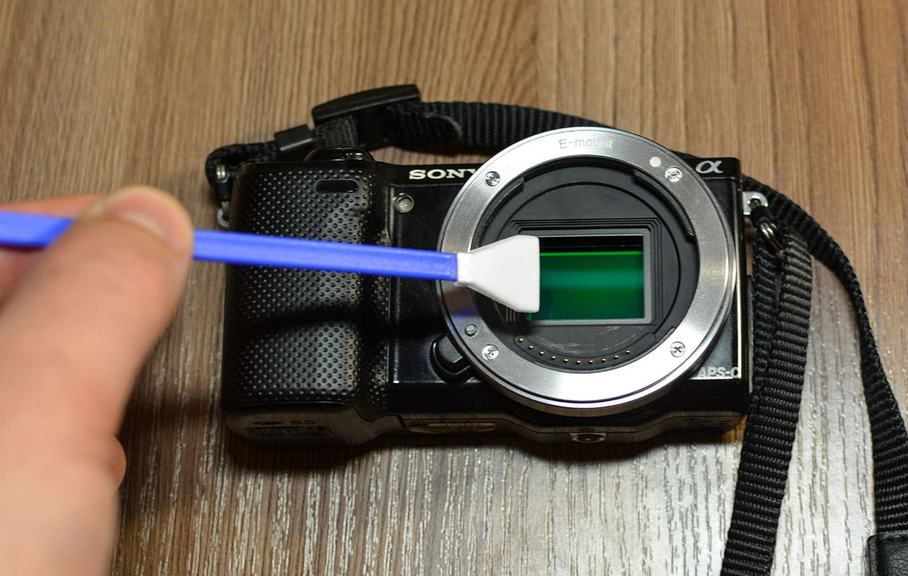

Чистка матрицы фотоаппарата

Процесс очистки матрицы специальным карандашом
Важно! Чистка матрицы требует аккуратности. Неправильные действия могут повредить сенсор.
1. Подготовка к чистке
Перед началом работы подготовьте все необходимое:
- Специальный карандаш для чистки матрицы
- Очищающую жидкость для сенсоров
- Безазотные салфетки
- Баллончик сжатого воздуха
- Увеличительное стекло для контроля
Выберите чистое помещение без сквозняков и включите режим очистки матрицы в меню камеры.
2. Процесс очистки

Необходимые инструменты: карандаш, салфетки и очищающая жидкость
2.1. Продувка сжатым воздухом
Держите камеру матрицей вниз и короткими нажатиями удалите рыхлую пыль.
2.2. Сухая очистка
Аккуратно проведите карандашом по поверхности матрицы без нажима.
2.3. Влажная очистка (при необходимости)
Нанесите 2-3 капли жидкости на салфетку и одним движением протрите матрицу.
3. Проверка результата

Сравнение снимков до и после чистки матрицы
Сделайте тестовый снимок белого листа на диафрагме f/16. Откройте фото в редакторе и проверьте наличие пятен. При необходимости повторите процедуру.
Профессиональные советы
Всегда держите камеру матрицей вниз при смене объективов
Используйте только специализированные средства для чистки
Не проводите чистку чаще 1 раза в 2-3 месяца
⚠️ Важные предупреждения
- Никогда не используйте бытовые чистящие средства
- Не прикасайтесь к матрице пальцами
- При серьезных загрязнениях обратитесь в сервис